حدود الجرعةDose Limits
عملي · م04 · 4.6 دقيقةأقسام المحاضرة (8)
- حدود الجرعة: غلاف التجربةExperiment 4: Dose Limits
- تحديد الجرعةDose limitation
- الجرعات المهنية القصوى المسموح بهاMaximum Permissible Occupational Doses
- أمثلة حسابية على الجرعة السنويةExamples
- الجرعة القصوى المسموح بها لعامة الناسThe Maximum Permissible Public Dose
- حدود جرعة الجسم كلهWhole body dose limits
- التعرّض الخارجي والداخليExternal and Internal Exposure
- حدود الجرعة للأنسجة والأعضاءDose limits for tissues and organs
حدود الجرعة: غلاف التجربةExperiment 4: Dose Limits
التجربة 4: حدود الجرعةExperiment 4 Dose Limits
تحديد الجرعةDose limitation
تحديد الجرعةDose limitation
- • Dose limitation involves setting and enforcing exposure limits for both occupational workers and the general public.يتضمن تحديد الجرعة وضع حدود للتعرّض وفرضها للعاملين المهنيين ولعامة الناس معاً.
- • These limits are typically expressed in terms of effective dose and are designed to prevent radiation related health effects.تُعبَّر هذه الحدود عادة بدلالة الجرعة الفعّالة وهي مصمَّمة لمنع الآثار الصحية المرتبطة بالإشعاع.
- • Occupational exposure limits are generally higher than those for the general public but they are still subject to the ALARA principle.حدود التعرّض المهني أعلى عموماً من حدود عامة الناس، لكنها ما تزال خاضعة لمبدأ ALARA (أقل ما يمكن بلوغه بصورة معقولة).
الجرعات المهنية القصوى المسموح بهاMaximum Permissible Occupational Doses
الجرعات المهنية القصوى المسموح بهاMaximum Permissible Occupational Doses
- • Maximum Permissible Occupational Doses are established radiation exposure limits for individuals who work with or are exposed to ionizing radiation in their occupational settings.الجرعات المهنية القصوى المسموح بها هي حدود تعرّض إشعاعي مقرَّرة للأفراد الذين يعملون مع الإشعاع المؤيِّن أو يتعرّضون له في أماكن عملهم.
- • These limits are set to ensure the safety of radiation workers and to minimize the risk of harmful health effects from radiation exposure.تُحدَّد هذه الحدود لضمان سلامة العاملين بالإشعاع ولتقليل خطر الآثار الصحية الضارة الناتجة عن التعرّض الإشعاعي.
- • The specific dose limits can vary depending on the country and the regulatory authority, but they are generally based on recommendations from international organizations like the International Commission on Radiological Protection (ICRP).قد تختلف حدود الجرعة المحددة بحسب البلد والجهة الرقابية، لكنها تستند عموماً إلى توصيات منظمات دولية مثل اللجنة الدولية للوقاية من الإشعاع (ICRP).
- • For occupationally exposed workers over 18 years of age:للعاملين المعرَّضين مهنياً ممن تزيد أعمارهم على 18 سنة:
- • Effective dose :20 mSv per year.الجرعة الفعّالة: 20 mSv (ملّي سيفرت) في السنة.
أمثلة حسابية على الجرعة السنويةExamples
مثال (1)Example (1)
- • A radiologic technologist working in an X-ray department receives an effective dose of 2 mSv per month from occupational exposure.فنيّ أشعة يعمل في قسم الأشعة السينية يتلقى جرعة فعّالة قدرها 2 mSv في الشهر من التعرّض المهني.
- • Calculate the total effective dose received in one year.احسب الجرعة الفعّالة الكلية المتلقاة في سنة واحدة.
الحلSolution
- • Annual Effective Dose = 2×12 = 24mSv/yearالجرعة الفعّالة السنوية = 2×12 = 24 mSv/سنة
مثال (2)Example (2)
- • A radiologic technologist receives an effective dose of 2 mSv in 4 months.فنيّ أشعة يتلقى جرعة فعّالة قدرها 2 mSv في 4 أشهر.
- • Calculate the effective dose received in one year..احسب الجرعة الفعّالة المتلقاة في سنة واحدة.
الحلSolution
- • Annual Effective Dose = 2×3 = 6mSv/yearالجرعة الفعّالة السنوية = 2×3 = 6 mSv/سنة
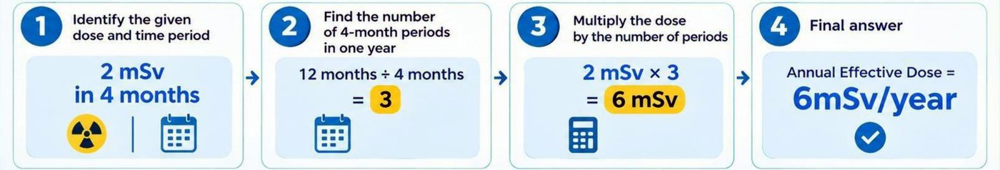
الجرعة القصوى المسموح بها لعامة الناسThe Maximum Permissible Public Dose
الجرعة القصوى المسموح بها لعامة الناسThe Maximum Permissible Public Dose
- • The Maximum Permissible Public Dose is the radiation exposure limit established to protect members of the general public who are not occupationally exposed to ionizing radiation.الجرعة القصوى المسموح بها لعامة الناس هي حد التعرّض الإشعاعي المقرَّر لحماية أفراد عامة الناس غير المعرَّضين مهنياً للإشعاع المؤيِّن.
- • The public dose limit is typically set at a much lower level than the occupational dose limit to provide an additional margin of safety.يُحدَّد حد جرعة عامة الناس عادة عند مستوى أقل بكثير من الحد المهني لتوفير هامش أمان إضافي.
- • For members of the general public:لأفراد عامة الناس:
- • Effective dose :1 mSv per yearالجرعة الفعّالة: 1 mSv في السنة
حدود جرعة الجسم كلهWhole body dose limits
حدود جرعة الجسم كلهWhole body dose limits
- • Whole body dose limits refer to the maximum permissible radiation exposure that an individual can receive to their entire body a specified period, typically in a year.حدود جرعة الجسم كله تعني أقصى تعرّض إشعاعي مسموح يمكن أن يتلقاه الفرد في جسمه بأكمله خلال مدة محددة، عادة في سنة.
- • These limits are set to protect individuals,especially radiation workers and members of the public,from the harmful effects of ionizing radiation.تُحدَّد هذه الحدود لحماية الأفراد، وبخاصة العاملين بالإشعاع وأفراد عامة الناس، من الآثار الضارة للإشعاع المؤيِّن.
التعرّض الخارجي والداخليExternal and Internal Exposure
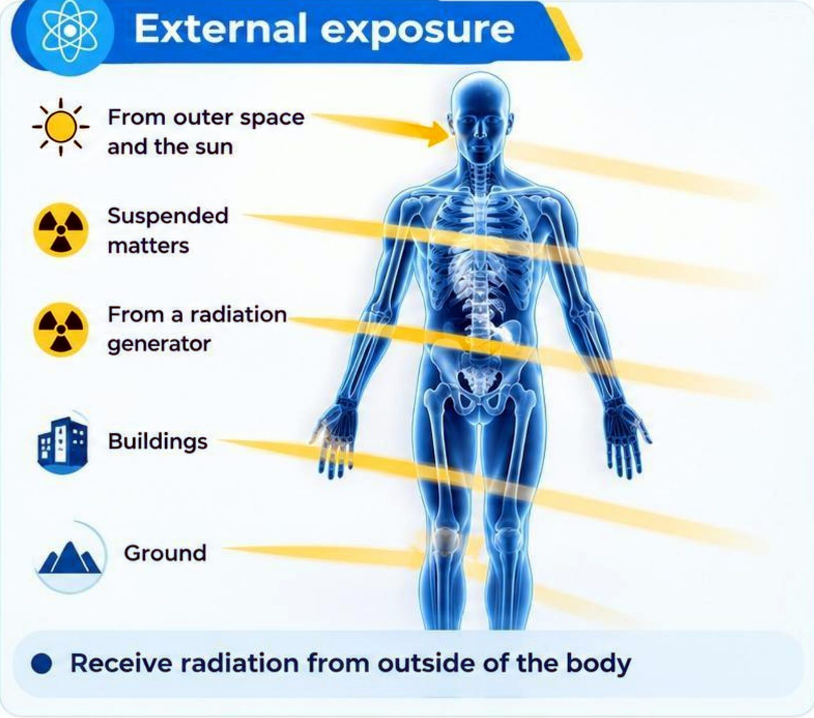
التعرّض الخارجيExternal exposure
- • From outer space and the sunمن الفضاء الخارجي والشمس
- • Suspended mattersالمواد العالقة
- • From a radiation generatorمن مولّد إشعاع
- • Buildingsالمباني
- • Groundالأرض
- • Receive radiation from outside of the bodyاستلام الإشعاع من خارج الجسم
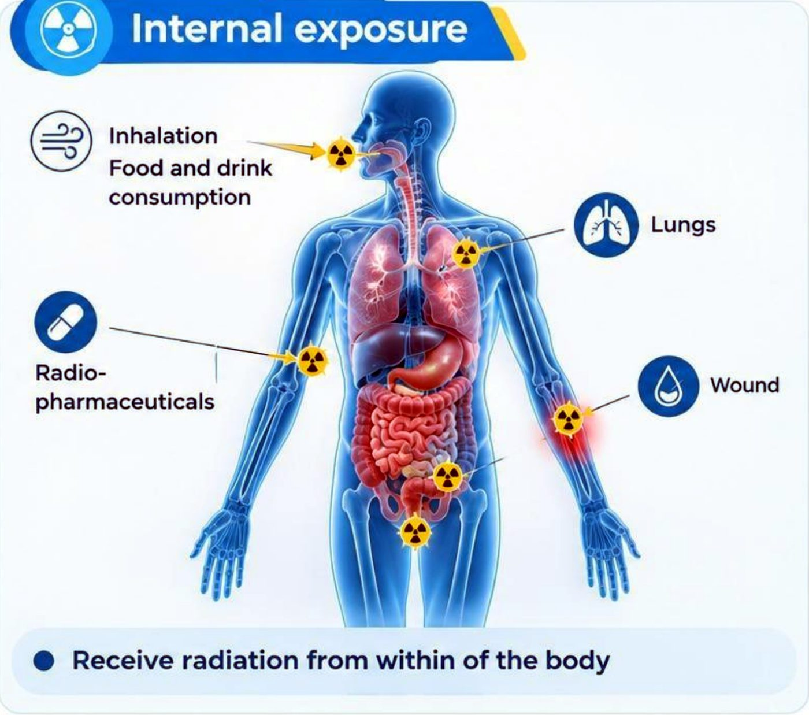
التعرّض الداخليInternal exposure
- • Inhalationالاستنشاق
- • Food and drink consumptionتناول الطعام والشراب
- • Lungsالرئتان
- • Radio-pharmaceuticalsالمستحضرات الصيدلانية المشعة
- • Woundالجرح
- • Receive radiation from within of the bodyاستلام الإشعاع من داخل الجسم
حدود الجرعة للأنسجة والأعضاءDose limits for tissues and organs
حدود الجرعة للأنسجة والأعضاءDose limits for tissues and organs
- • Dose limits for tissues and organs are established to minimize the risk of radiation-induced health effects from occupational exposure.تُقرَّر حدود الجرعة للأنسجة والأعضاء لتقليل خطر الآثار الصحية المحدَثة بالإشعاع الناتجة عن التعرّض المهني.
- • These limits are based on recommendations from organizations such as:تستند هذه الحدود إلى توصيات منظمات مثل:
- • International Commission on Radiological Protection (ICRP).اللجنة الدولية للوقاية من الإشعاع (ICRP).
- • United States Nuclear Regulatory Commission (NRC).هيئة التنظيم النووي الأمريكية (NRC).
حدود الجرعة للأنسجة والأعضاءDose Limits for Tissues and Organs
1- عدسة العينLens of the Eye
- • Occupational exposure : 20 mSv per year averaged over 5 years, with a maximum of 50 mSv in any single year.التعرّض المهني: 20 mSv في السنة بمتوسط 5 سنوات، وبحد أقصى 50 mSv في أي سنة منفردة.
- • Public exposure : 15 mSv per year.تعرّض عامة الناس: 15 mSv في السنة.
2- الجلدSkin
- • Occupational exposure : 500 mSv per year.التعرّض المهني: 500 mSv في السنة.
- • Public exposure : 50 mSv per year.تعرّض عامة الناس: 50 mSv في السنة.
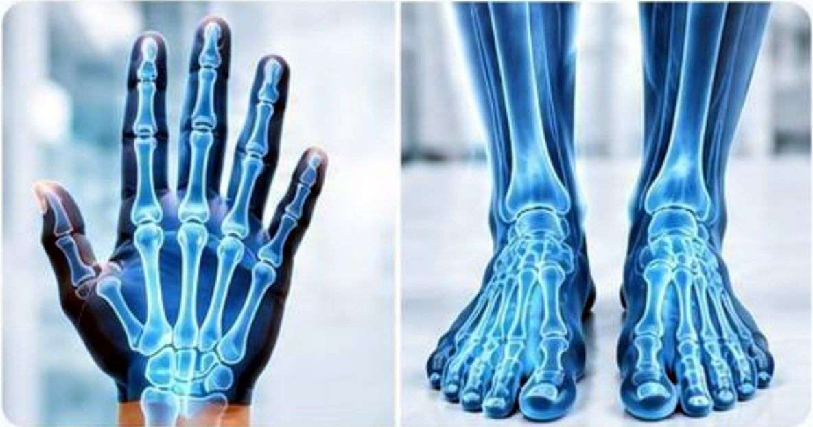
3- اليدان والقدمانHands and Feet
- • Occupational exposure : 500 mSv per year.التعرّض المهني: 500 mSv في السنة.
- • Public exposure: No specific general limit listed here.تعرّض عامة الناس: لا يوجد حد عام محدد مذكور هنا.
الترجمة العربية
TATEN IPAOI UAVERSTN
0.12 u5w/h
AND MEDICAL TECHNIQUE
RADIOLOGY TECHNOLOGY DEPARTMENT
Fundamentals of Radiation Protection
second Academic year
Experiment 4
Dose Limits
BSc kadhim jawad
ALAYEN IRAQI
AIUQ
قسم تقنيات الأشعة
أساسيات الوقاية من الإشعاع
المرحلة الثانية
التجربة 4
حدود الجرعة
0.12 µSv/h
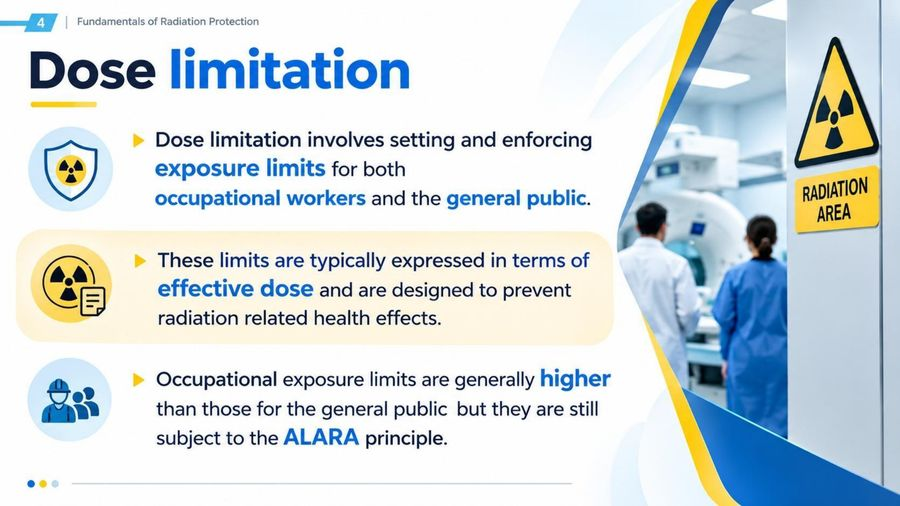
الترجمة العربية
4 | Fundamentals of Radiation Protection
Dose limitation
Dose limitation involves setting and enforcing
exposure limits for both
occupational workers and the general public.
These limits are typically expressed in terms of
effective dose and are designed to prevent
radiation related health effects.
Occupational exposure limits are generally higher
than those for the general public but they are still
subject to the ALARA principle.
RADIATION
AREA
أساسيات الوقاية من الإشعاع
تحديد الجرعة (Dose limitation)
يتضمن تحديد الجرعة وضع حدود للتعرض وتطبيقها لكل من العاملين المهنيين وعامة الناس.
تُعبَّر هذه الحدود عادةً بدلالة الجرعة الفعّالة (effective dose)، وتهدف إلى منع التأثيرات الصحية المرتبطة بالإشعاع.
حدود التعرض المهني أعلى عموماً من حدود عامة الناس، لكنها تبقى خاضعة لمبدأ ALARA.
منطقة إشعاعية

الترجمة العربية
Fundamentals of Radiation Protection
Maximum Permissible
Occupational Doses
• Maximum Permissible Occupational Doses are
established radiation exposure limits for individuals
who work with or are exposed to ionizing radiation
in their occupational settings.
• These limits are set to ensure the safety of
radiation workers and to minimize the risk of
harmful health effects from radiation exposure.
أساسيات الوقاية من الإشعاع
الجرعات المهنية القصوى المسموح بها
• الجرعات المهنية القصوى المسموح بها هي حدود تعرض إشعاعي موضوعة للأفراد الذين يعملون مع الإشعاع المؤين أو يتعرضون له في أماكن عملهم.
• تُوضع هذه الحدود لضمان سلامة العاملين بالإشعاع وتقليل خطر التأثيرات الصحية الضارة الناجمة عن التعرض الإشعاعي.
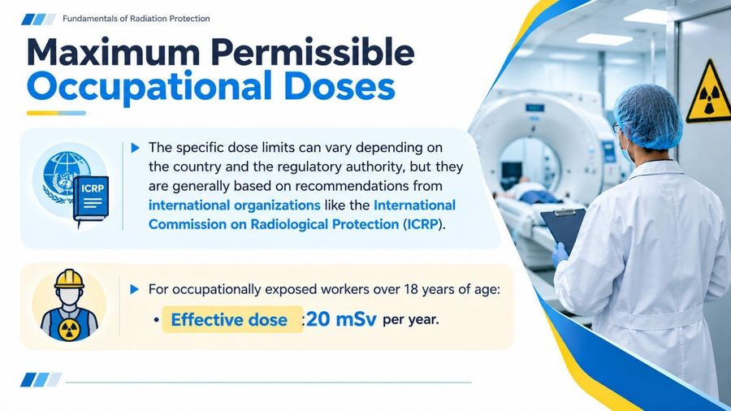
الترجمة العربية
Fundamentals of Radiation Protection
Maximum Permissible
Occupational Doses
ICRP
• The specific dose limits can vary depending on
the country and the regulatory authority, but they
are generally based on recommendations from
international organizations like the International
Commission on Radiological Protection (ICRP).
• For occupationally exposed workers over 18 years of age:
• Effective dose :20 mSv per year.
أساسيات الوقاية من الإشعاع
الجرعات المهنية القصوى المسموح بها
ICRP
• قد تختلف حدود الجرعة المحددة باختلاف البلد والجهة التنظيمية، لكنها تستند عموماً إلى توصيات منظمات دولية مثل اللجنة الدولية للوقاية الإشعاعية (ICRP).
• للعاملين المعرّضين مهنياً ممن تزيد أعمارهم على 18 سنة:
• الجرعة الفعّالة: 20 mSv في السنة.

الترجمة العربية
Occupational
workers
(higher limit)
General public
(lower limit)
Example (1)
A radiologic technologist working in an X-ray
department receives an effective dose of 2 mSv
per month from occupational exposure. Calculate
the total effective dose received in one year.
Solution
Annual Effective Dose = 2×12 = 24mSv/year
العاملون المهنيون
(حد أعلى)
عامة الناس
(حد أدنى)
مثال (1)
يتلقى فني أشعة يعمل في قسم الأشعة السينية جرعة فعّالة قدرها 2 mSv في الشهر من التعرض المهني. احسب الجرعة الفعّالة الكلية المتلقّاة في سنة واحدة.
الحل
الجرعة الفعّالة السنوية = 2×12 = 24 mSv/سنة
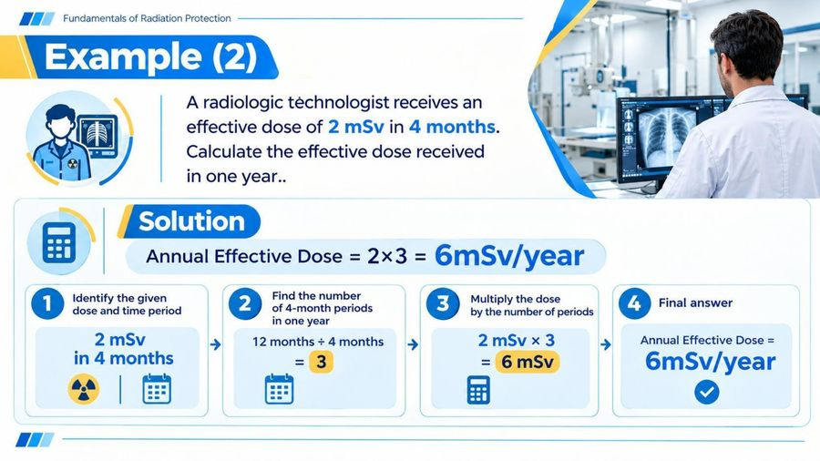
الترجمة العربية
Fundamentals of Radiation Protection
Example (2)
A radiologic téchnologist receives an
effective dose of 2 mSv in 4 months.
Calculate the effective dose received
in one year..
Solution
Annual Effective Dose = 2x3 = 6mSv/year
1
Identify the given
dose and time period
2
2 mSv
in 4 months
→
Find the number
of 4-month periods
in one year
12 months ÷ 4 months
= 3
3
Multiply the dose
by the number of periods
→
2 mSv x 3
= 6 mSv
→
Final answer
Annual Effective Dose =
6mSv/year
أساسيات الوقاية من الإشعاع
مثال (2)
يتلقى فني أشعة جرعة فعّالة قدرها 2 mSv في 4 أشهر. احسب الجرعة الفعّالة المتلقّاة في سنة واحدة.
الحل
الجرعة الفعّالة السنوية = 2×3 = 6 mSv/سنة
1
حدّد الجرعة المعطاة والمدة الزمنية
2
2 mSv
في 4 أشهر
←
أوجد عدد فترات الأربعة أشهر في السنة الواحدة
12 شهراً ÷ 4 أشهر
= 3
3
اضرب الجرعة بعدد الفترات
←
2 mSv × 3
= 6 mSv
←
الجواب النهائي
الجرعة الفعّالة السنوية =
6 mSv/سنة
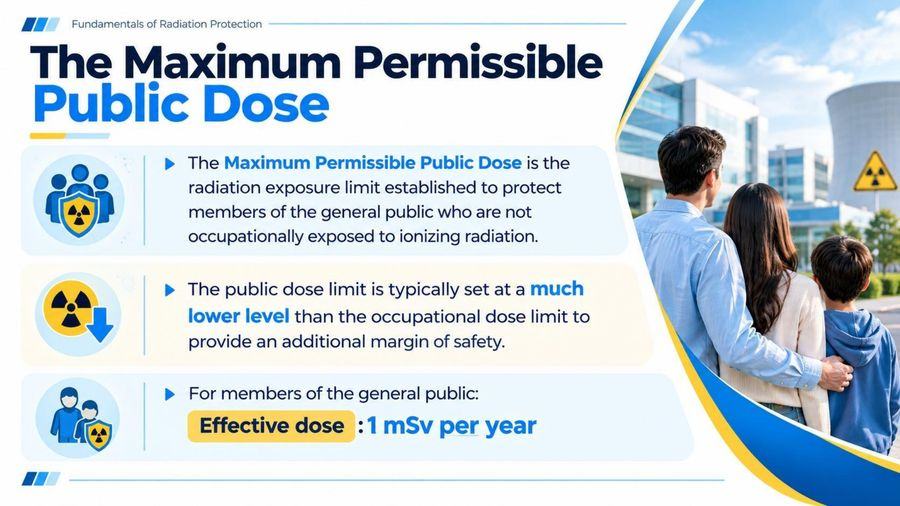
الترجمة العربية
Fundamentals of Radiation Protection
The Maximum Permissible
Public Dose
• The Maximum Permissible Public Dose is the
radiation exposure limit established to protect
members of the general public who are not
occupationally exposed to ionizing radiation.
• The public dose limit is typically set at a much
lower level than the occupational dose limit to
provide an additional margin of safety.
• For members of the general public:
Effective dose :1 mSv per year
أساسيات الوقاية من الإشعاع
الجرعة القصوى المسموح بها لعامة الناس
• الجرعة القصوى المسموح بها لعامة الناس هي حد التعرض الإشعاعي الموضوع لحماية أفراد عامة الناس الذين لا يتعرضون للإشعاع المؤين مهنياً.
• يُحدَّد حد جرعة عامة الناس عادةً عند مستوى أقل بكثير من حد الجرعة المهنية لتوفير هامش أمان إضافي.
• لأفراد عامة الناس:
الجرعة الفعّالة: 1 mSv في السنة
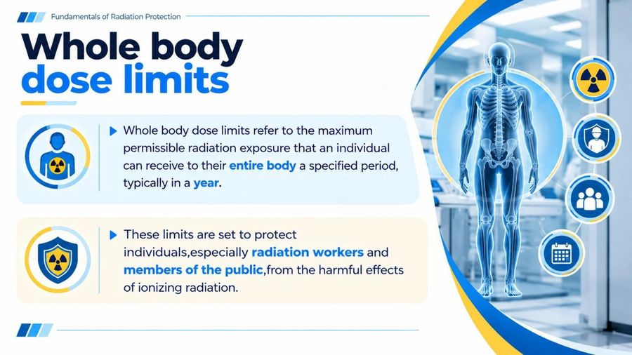
الترجمة العربية
Fundamentals of Radiation Protection
Whole body
dose limits
• Whole body dose limits refer to the maximum
permissible radiation exposure that an individual
can receive to their entire body a specified period,
typically in a year.
• These limits are set to protect
individuals,especially radiation workers and
members of the public,from the harmful effects
of ionizing radiation.
أساسيات الوقاية من الإشعاع
حدود جرعة الجسم الكامل
• تشير حدود جرعة الجسم الكامل إلى أقصى تعرض إشعاعي مسموح به يمكن أن يتلقاه الفرد في جسمه كله خلال مدة محددة، وعادةً في السنة.
• تُوضع هذه الحدود لحماية الأفراد، ولا سيما العاملين بالإشعاع وأفراد عامة الناس، من التأثيرات الضارة للإشعاع المؤين.

الترجمة العربية
Fundamentals of Radiation Protection
External and Internal Exposure
External exposure
Internal exposure
From outer space
and the sun
Inhalation
Food and drink
consumption
Suspended
matters
Lungs
From a radiation
generator
Radio-
pharmaceuticals
Wound
Buildings
Ground
• Receive radiation from outside of the body
Receive radiation from within of the body
أساسيات الوقاية من الإشعاع
التعرض الخارجي والداخلي
التعرض الخارجي (External exposure): من الفضاء الخارجي والشمس، المواد العالقة، من مولّد إشعاعي، المباني، الأرض.
• تلقّي الإشعاع من خارج الجسم.
التعرض الداخلي (Internal exposure): الاستنشاق، تناول الطعام والشراب، الرئتان، المستحضرات الصيدلانية الإشعاعية، الجرح.
• تلقّي الإشعاع من داخل الجسم.

الترجمة العربية
Fundamentals of Radiation Protection
Dose limits for
tissues and organs
• Dose limits for tissues and organs are established
to minimize the risk of radiation-induced health
effects from occupational exposure.
These limits are based on recommendations
from organizations such as:
International Commission on Radiological Protection (ICRP).
United States Nuclear Regulatory Commission (NRC).
أساسيات الوقاية من الإشعاع
حدود الجرعة للأنسجة والأعضاء
• تُوضع حدود الجرعة للأنسجة والأعضاء لتقليل خطر التأثيرات الصحية الناجمة عن الإشعاع بسبب التعرض المهني.
تستند هذه الحدود إلى توصيات منظمات مثل:
اللجنة الدولية للوقاية الإشعاعية (ICRP).
هيئة التنظيم النووي الأمريكية (NRC).

الترجمة العربية
Fundamentals of Radiation Protection
Dose Limits for Tissues and Organs
1
Lens of the Eye
2
Skin
3
Hands and Feet
Occupational exposure :
20 mSv per year averaged over
5 years, with a maximum of 50 mSv
in any single year.
Public exposure :
15 mSv per year.
Occupational exposure :
500 mSv per year.
Public exposure:
50 mSv per year.
Occupational exposure:
500 mSv per year.
Public exposure:
No specific general limit listed here.
أساسيات الوقاية من الإشعاع
حدود الجرعة للأنسجة والأعضاء
1. عدسة العين (Lens of the Eye)
• التعرض المهني: 20 mSv في السنة بمتوسط خمس سنوات، وبحد أقصى 50 mSv في أي سنة منفردة.
• تعرض عامة الناس: 15 mSv في السنة.
2. الجلد (Skin)
• التعرض المهني: 500 mSv في السنة.
• تعرض عامة الناس: 50 mSv في السنة.
3. اليدان والقدمان (Hands and Feet)
• التعرض المهني: 500 mSv في السنة.
• تعرض عامة الناس: لا يوجد حد عام محدد مذكور هنا.

الترجمة العربية
Thank You
شكراً لكم

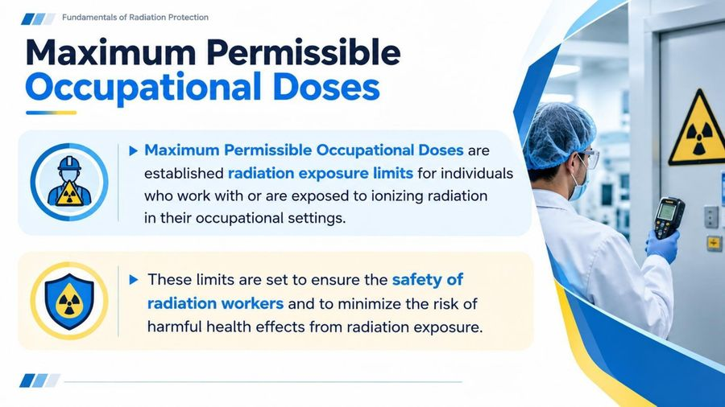

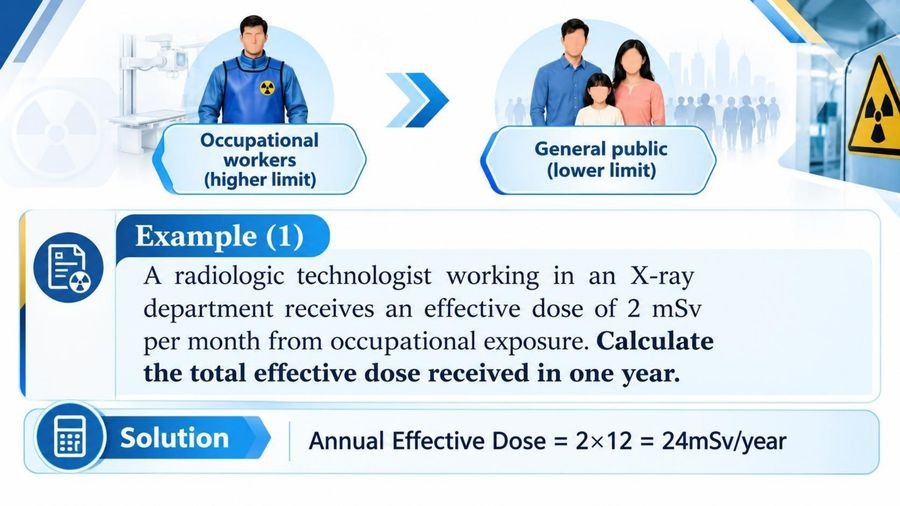


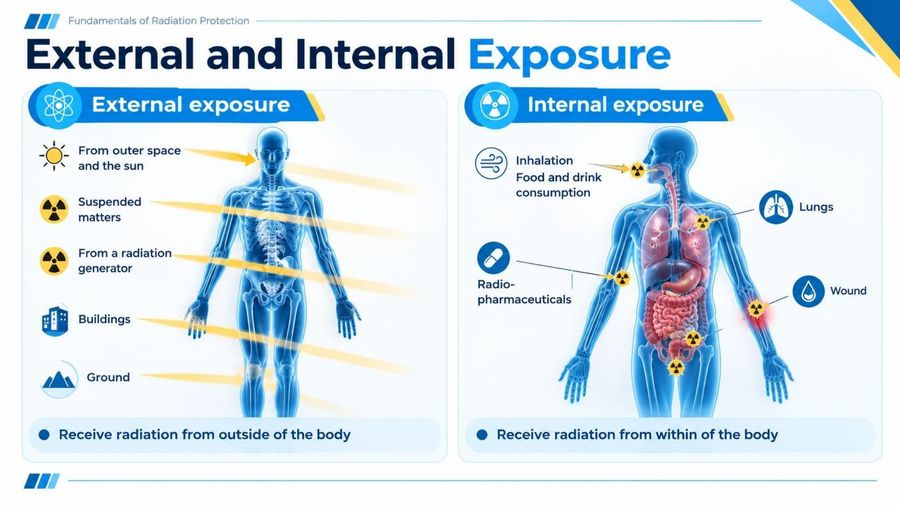
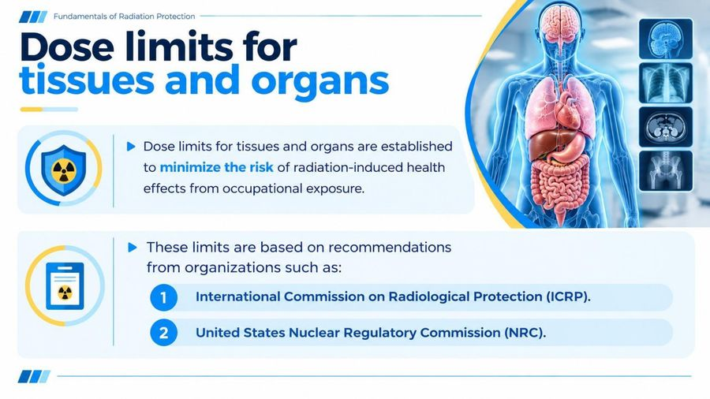
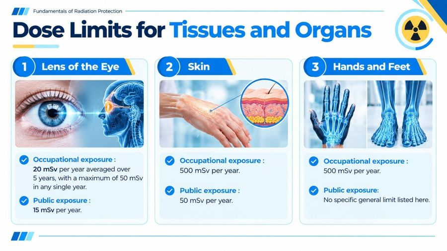

المحاضرة مسموعة
نص الأستاذ بالإنكليزي مثل الأصل · 4.6 دقيقة. اضغط أي جملة تسمعها، أو مصطلح منقّط تسمع لفظه ومعناه.
Experiment 4: Dose Limitsحدود الجرعة: غلاف التجربة
Experiment 4: Dose Limits
Experiment 4 Dose Limits
Dose limitationتحديد الجرعة
Dose limitation
Dose limitation
Dose limitation involves setting and enforcing exposure limits for both occupational workers and the general public.
These limits are typically expressed in terms of effective dose and are designed to prevent radiation related health effects.
Occupational exposure limits are generally higher than those for the general public but they are still subject to the ALARA principle.
Maximum Permissible Occupational Dosesالجرعات المهنية القصوى المسموح بها
Maximum Permissible Occupational Doses
Maximum Permissible Occupational Doses
Maximum Permissible Occupational Doses are established radiation exposure limits for individuals who work with or are exposed to ionizing radiation in their occupational settings.
These limits are set to ensure the safety of radiation workers and to minimize the risk of harmful health effects from radiation exposure.
The specific dose limits can vary depending on the country and the regulatory authority, but they are generally based on recommendations from international organizations like the International Commission on Radiological Protection (ICRP).
For occupationally exposed workers over 18 years of age:
Effective dose :20 mSv per year.
Examplesأمثلة حسابية على الجرعة السنوية
Examples
Example (1)
A radiologic technologist working in an X-ray department receives an effective dose of 2 mSv per month from occupational exposure.
Calculate the total effective dose received in one year.
Solution
Annual Effective Dose = 2×12 = 24mSv/year
Example (2)
A radiologic technologist receives an effective dose of 2 mSv in 4 months.
Calculate the effective dose received in one year..
Solution
Annual Effective Dose = 2×3 = 6mSv/year
The Maximum Permissible Public Doseالجرعة القصوى المسموح بها لعامة الناس
The Maximum Permissible Public Dose
The Maximum Permissible Public Dose
The Maximum Permissible Public Dose is the radiation exposure limit established to protect members of the general public who are not occupationally exposed to ionizing radiation.
The public dose limit is typically set at a much lower level than the occupational dose limit to provide an additional margin of safety.
For members of the general public:
Effective dose :1 mSv per year
Whole body dose limitsحدود جرعة الجسم كله
Whole body dose limits
Whole body dose limits
Whole body dose limits refer to the maximum permissible radiation exposure that an individual can receive to their entire body a specified period, typically in a year.
These limits are set to protect individuals,especially radiation workers and members of the public,from the harmful effects of ionizing radiation.
External and Internal Exposureالتعرّض الخارجي والداخلي
External and Internal Exposure
External exposure
From outer space and the sun
Suspended matters
From a radiation generator
Buildings
Ground
Receive radiation from outside of the body
Internal exposure
Inhalation
Food and drink consumption
Lungs
Radio-pharmaceuticals
Wound
Receive radiation from within of the body
Dose limits for tissues and organsحدود الجرعة للأنسجة والأعضاء
Dose limits for tissues and organs
Dose limits for tissues and organs
Dose limits for tissues and organs are established to minimize the risk of radiation-induced health effects from occupational exposure.
These limits are based on recommendations from organizations such as:
International Commission on Radiological Protection (ICRP).
United States Nuclear Regulatory Commission (NRC).
Dose Limits for Tissues and Organs
Lens of the Eye
Occupational exposure : 20 mSv per year averaged over 5 years, with a maximum of 50 mSv in any single year.
Public exposure : 15 mSv per year.
Skin
Occupational exposure : 500 mSv per year.
Public exposure : 50 mSv per year.
Hands and Feet
Occupational exposure : 500 mSv per year.
Public exposure: No specific general limit listed here.
كل أسئلة المحاضرة: السؤال إنكليزي وتحته عربي، وكل خيار بلغتين، والجواب الصحيح معلّم ويّاه «ليش صح» · 0.2 MB
قراءة الأسئلة تحميلاضغط أي مصطلح منقّط تسمع لفظه ومعناه.